文章首发于先知社区，链接https://xz.aliyun.com/t/9866
本文主要从Tomcat的源码角度看对HTTP协议的实现，并分析这种另类HTTP请求走私产生的原因。
漏洞信息
最近发现Tomcat更新了漏洞公告，其中一个级别为important的漏洞是关于HTTP走私的，然而这个漏洞虽然是HTTP走私，但是和我们常见的走私类型却完全不一样，很是有趣。

Apache Tomcat 在某些情况下没有正确解析 HTTP 传输编码请求标头，导致在与反向代理一起使用时可能出现请求走私。具体来说：如果客户端声明它只接受 HTTP/1.0 响应，Tomcat 会错误地忽略传输编码标头；Tomcat 尊重身份编码；并且 Tomcat 不能确保分块编码（如果存在）是最终编码。
影响版本：
Apache Tomcat 10.0.0-M1-10.0.6
Apache Tomcat 9.0.0.M1-9.0.46
Apache Tomcat 8.5.0-8.5.66
也就是说，在HTTP/1.0的连接中，Tomcat无法确保Transfer-Encoding: chunked的请求头，会按照chunked的方式进行解析，那这样如何造成http走私呢？
漏洞复现
http走私漏洞早在2005年就被提出，直到2019 BlackHat USA 2019上，一篇HTTP Desync Attacks: Smashing into the Cell Next Door的议题，才受到大家的关注。
在现在复杂的业务环境中，各种WAF，CDN等，当出现前端代理，和后端服务时，如果两者对RFC标准的实现并不一样，就会出现问题，HTTP走私就是在处理请求中数据的不同造成的。
下面简单一张图说下实现机制
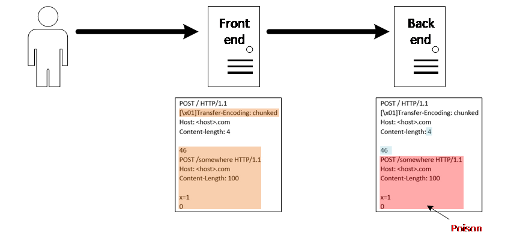
如果同时存在Transfor-Encoding和Content-Length，前端解析TE而忽略了CL，将整个黄色部分作为post body，但是后端并不这样认为，而是解析了CL，忽略了TE，那么认为post body只有4字节，所以红色部分的post body就成为了下一个请求的内容，这也就是http走私的内容。
目前可以将走私分为五种类型，具体可参考HTTP走私，CL不为0的GET请求、CL-CL、CL-TE、TE-CL、TE-TE。
Tomcat这个走私漏洞和上面五种都不相同，是通过http版本和TE造成的，根据漏洞信息，简单复现下漏洞（Tomcat 9.0.35），后端代码request.getParameter("a");。
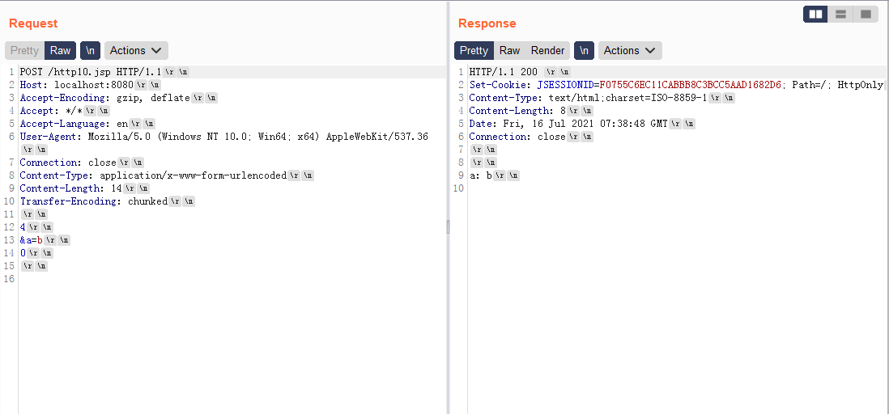
http/1.1会正常解析，按照TE: chunked解析，a的取值就是b。
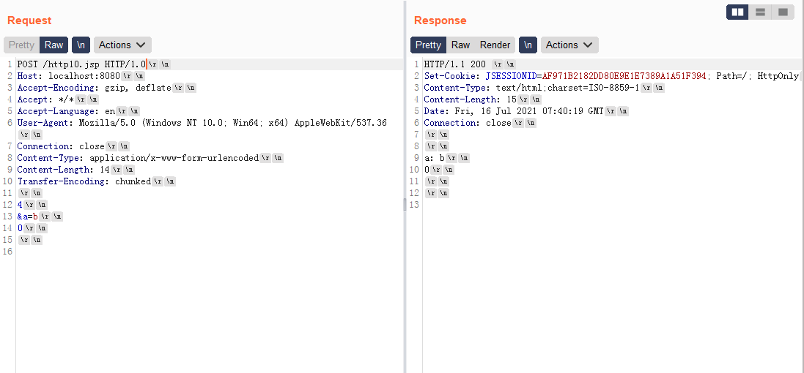
很明显http/1.0并不会按照TE解析，而是忽略了TE，按照CL的长度解析，这样a的取值便是b\r\n0\r\n，这也是造成http走私的原因。
漏洞分析
出现这种http/1.0和http/1.1协议解析不一致的情况的原因只能从代码中看下了，简单搭建了Tomcat 9.0.35的调试环境，先看下http/1.1解析正常的情况，Tomcat在http协议解析中，只有http2和http11两个包，http/0.9、http/1.0和http/1.1都是在http11包中解析，我们现在org.apache.coyote.http11.Http11Processor中的prepareRequest函数下个断点，此函数作用就是在读取到请求头后，设置request filters。
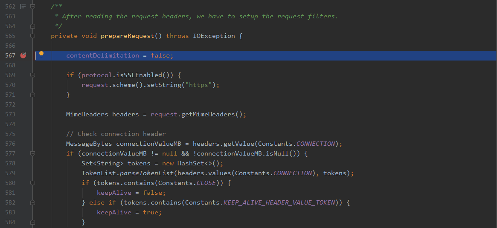
然后发送http/1.1的数据包，逐步调试。

来到735行，处理transfer-encoding header，当是http/1.1协议时，把te的取值作为encoding增加到inputFilter中，由于te可以取多个值，并以chunked结束，所以这里会有一个循环来设置encoding，接下来跟进addInputFilter函数。
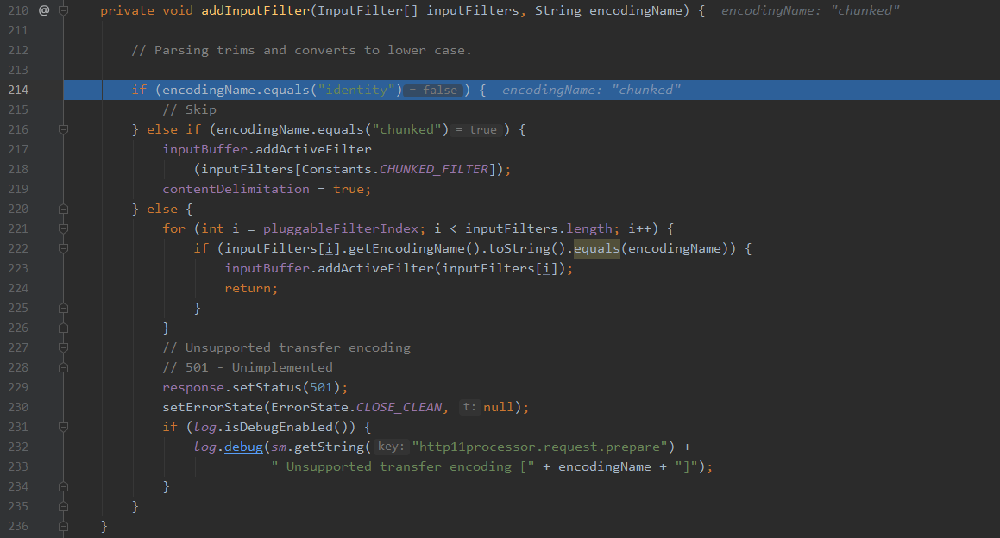
可以看到如果te取值为identity直接skip不做处理，如果取值chunked，跟进函数。
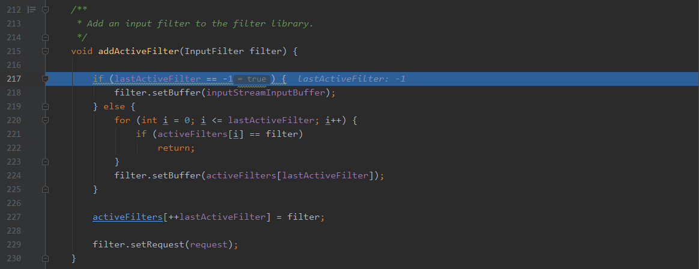
就是给请求设置了过滤器，用于解析request，如果te取其他值，就判断其是否是可取的te值，如果是就调用addActiveFilter函数，如果是其他取值就直接返回501 not implemented。
这是个完整的http/1.1中transfer-encoding处理的流程，接下来我们看下http/1.0的处理，同样地方下断点，然后发送http/1.0协议数据包。
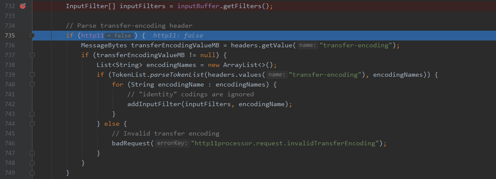
当然仔细地同志应该已经发现了，在解析te时的这个判断，会导致在http/1.0协议时不进入解析，而直接进入后续的content-length的解析。
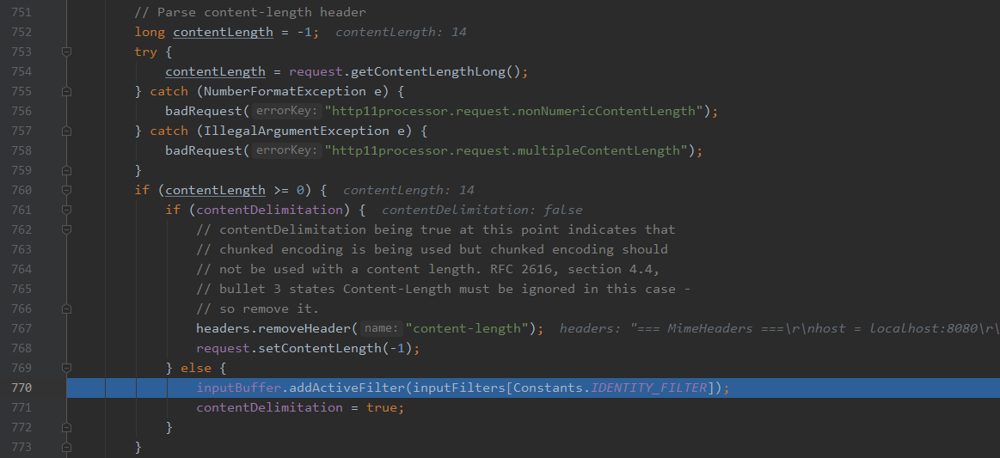
默认激活identity编码，也就是数据本身没有格式。很简单的一个协议版本的判断，导致了这次http走私漏洞的产生。
一点思考
可能到这里还是有一些同志还不明白为什么这造成了http走私漏洞，我们接着创建一个环境，后端是tomcat，前面用nginx反向代理tomcat，在把我们的http10.jsp放上去，环境：Ubuntu16.04+Nginx1.14.0+Tomcat8.5.45
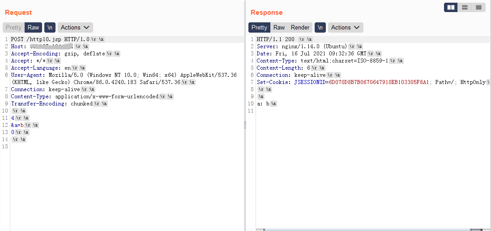
发现其实http/1.0协议，从nginx到tomcat最终得到了准确的结果，我们抓包看下，从nginx发往tomcat8080端口的数据是什么
tcpdump -i lo -A -s 0 ‘tcp port 8080 and (((ip[2:2] - ((ip[0]&0xf)<<2)) - ((tcp[12]&0xf0)>>2)) != 0)’
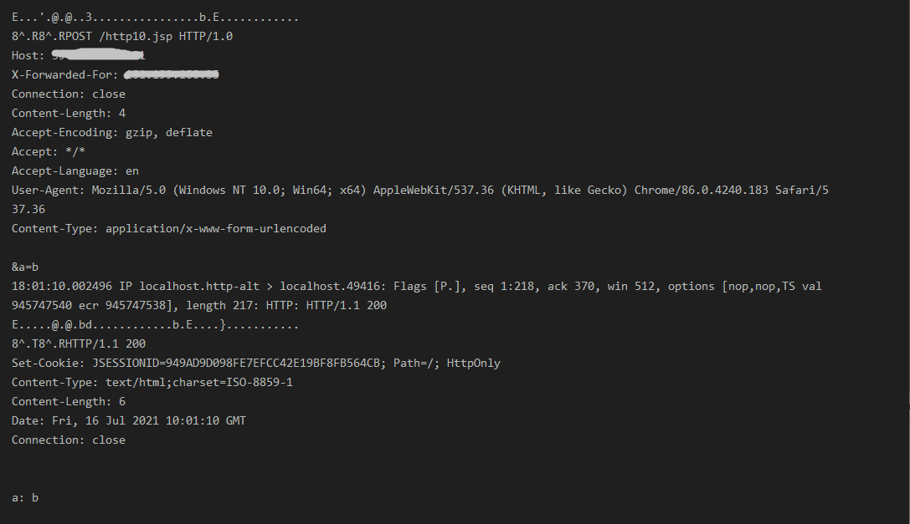
很明显，nginx对于这种http/1.0的请求中的transfer-encoding也会进行解析，所以如果tomcat并不能解析http/1.0的中的chunked的数据，在某些特定的情况下，此种漏洞就会演变成前文提到的TE-CL类型http走私。
但是Tomcat为什么要加入http11的判断，来进行transfer-encoding的解析呢？我们可以翻开最新的关于http的RFC文档https://www.rfc-editor.org/rfc/rfc7230.html#section-3.3.1
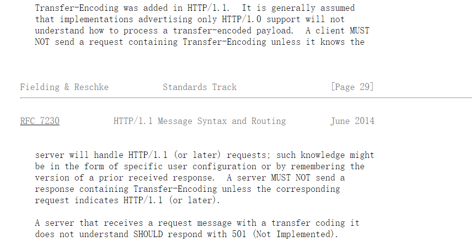
首先transfer-encoding是在HTTP/1.1中添加的，http/1.0并不包含transfer-encoding的功能，一般认为仅实现了http/1.0的应该忽略transfor-encoding，但是后面一句，client MUST NOT 发送请求包括transfor-encoding，除非他知道server可以处理HTTP/1.1或更高版本的请求。
也就是按照RFC来理解，可以发送带有te的http/1.0请求，server如果可以解析，就要按照http/1.1中规范的te格式进行解析，但是如果sever只支持http/1.0的，就不能发了。
Tomcat开发着可能也是理解错误，直接将http/1.0的协议设置为不支持transfer-encoding，即使他实现了http/1.1中的transfer-encoding，从而导致了潜在的http请求走私漏洞。
但是这种协议的规范真的应该这么做吗？http/1.1加入的功能，却要在http/1.0也实现，虽然可能便利了很多，但是个人感觉这种行为实则搞乱了协议的迭代原则。
参考资料
https://tomcat.apache.org/security-9.html
https://www.rfc-editor.org/rfc/rfc7230.html
https://portswigger.net/research/http-desync-attacks-request-smuggling-reborn
https://www.anquanke.com/post/id/224321
https://paper.seebug.org/1048/
https://blog.csdn.net/daiyudong2020/article/details/71375256